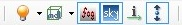

Rendering toolbar allows you to toggle several GZDoom Builder's features:
- Toggles models, dynamic lights and fog rendering in Visual mode.
- Toggles dynamic lights rendering in Visual mode.
- Toggles dynamic lights animation in Visual mode.
- Toggles models rendering.
- Render all models / render only models for selected things.
- Toggles fog rendering in Visual mode.
- Toggles Event lines.
- Toggles Visual vertices in Visual mode (UDMF only).
Most of these settings can also be toggled using actions.
You can toggle currently enabled rendering effects using "Toggle GZDoom effects" action.